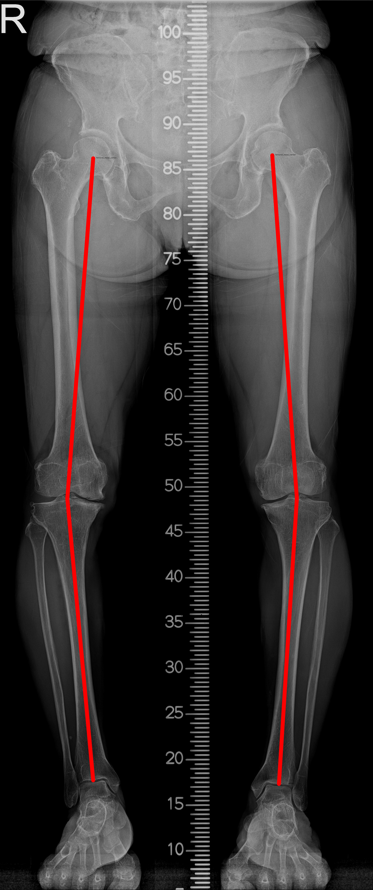
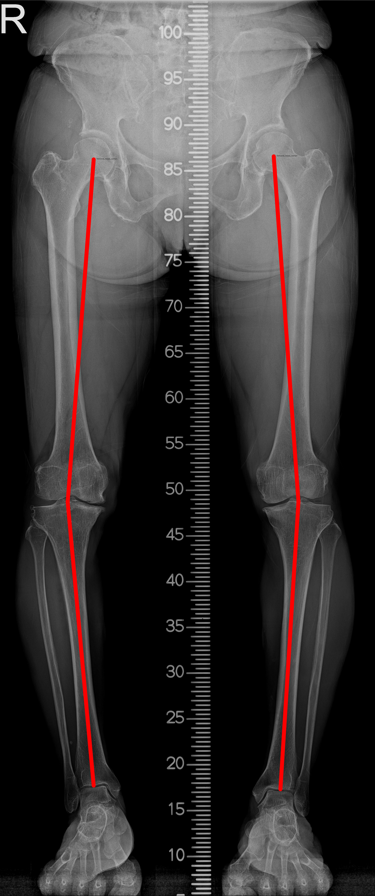

ScanoX Description
Our platform focuses on measuring the Hip-Knee-Ankle (HKA) angle, which is an index for diagnosing knock-knees (genu valgum) or bow legs (genu varum).
 

Using the CNN algorithm, ScanoX provides predictions of HKA angle to assist professional doctors in diagnosing lower extremity deformity.
ScanoX User Guideline
1. Image Upload
- 분석 화면 웹 페이지 상단에 위치한 Image Upload 버튼을 클릭합니다.
- 팝업된 창에서 분석하고자 하는 Scanogram X-Ray 영상 이미지를 선택합니다.
- 이미지가 선택되면 웹 페이지의 좌측 Box에 미리보기가 표시됩니다.
2. Analysis
- Image Upload 과정이 끝났으면, Analysis 버튼을 클릭합니다.
- 분석이 시작되면 화살표 상단에 Analyzing이 표시되고 Analysis Completed가 나올 때까지 기다립니다.
3. Result
- 분석이 완료되면 웹 페이지 우측 Box에 예측 결과 이미지가 표시됩니다.
- 중앙 하단에 HKA (Hip-Knee-Ankle) Angle이 표시됩니다.
- 결과 데이터가 필요한 경우, Result CSV Download 및 Analysis Image Download 버튼을 통해 각도 결과가 담긴 CSV 데이터와 결과 이미지 데이터를 다운받을 수 있습니다.
4. Reset
- 분석을 다시 시작하거나 다른 영상 이미지를 선택하려면 Reset 버튼을 클릭합니다. 이 버튼을 클릭하면 분석화면 웹 페이지가 초기 상태로 돌아갑니다.